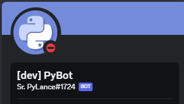

Este pequeno bot que possui 5 comandos. O bot que meus amigos conseguiram fazer a API do Discord (v10) ficar em 'Rate Limited'...
Eu não sei como, porém eu não gostei muito do bot, ele ficou tão sem graça, não sei como explicar.
Afinal, que bot é esse que só tem cinco comandos? Tipo...
Sobre o bot no Discord, desenvolvido com a API na versão 10, enfrentamos desafios resultando em 'Rate Limited'. Atualmente, possui apenas cinco comandos, e percebo uma certa insatisfação quanto à sua simplicidade. Considero que adicionar mais comandos e aprimorar a interface pode ser uma estratégia eficaz para melhorar a experiência dos usuários. Estou à disposição para discutir e implementar possíveis melhorias.